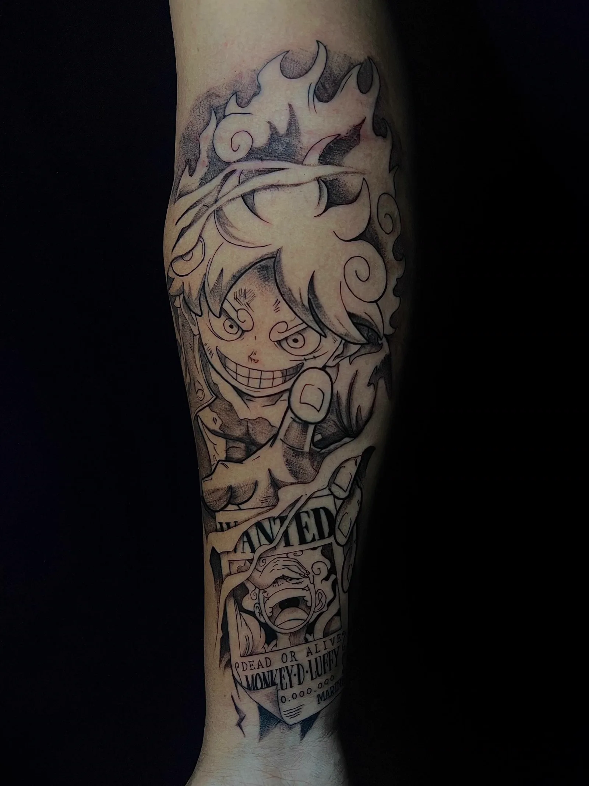
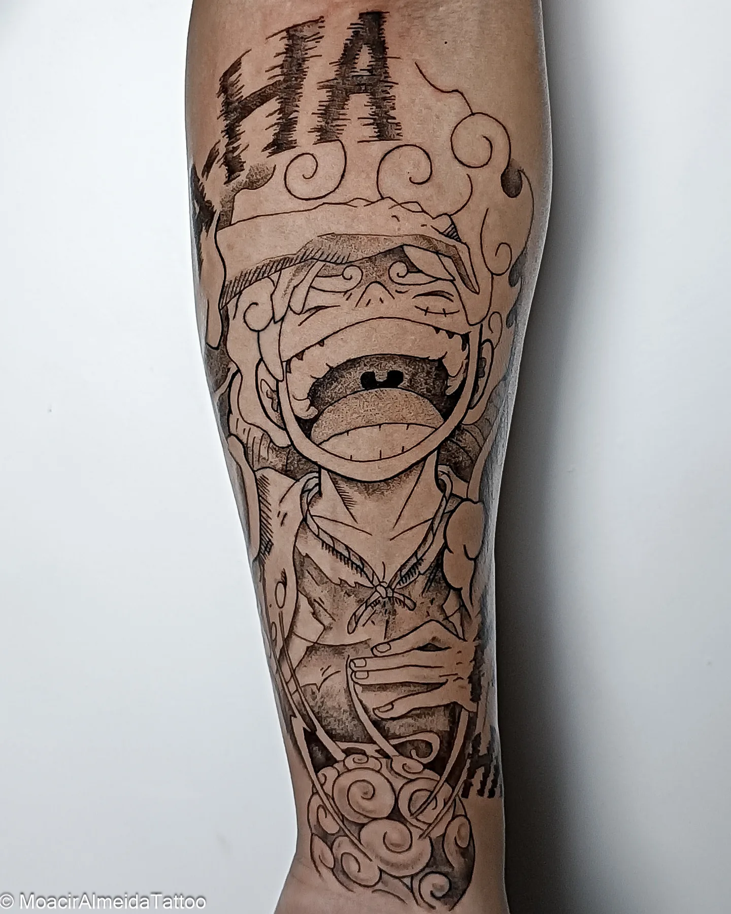
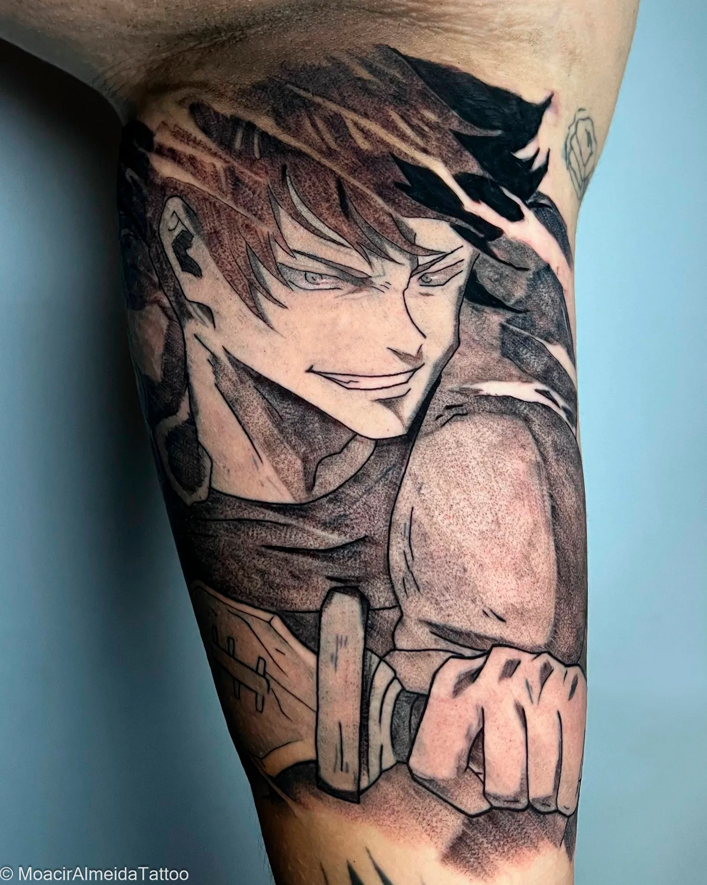
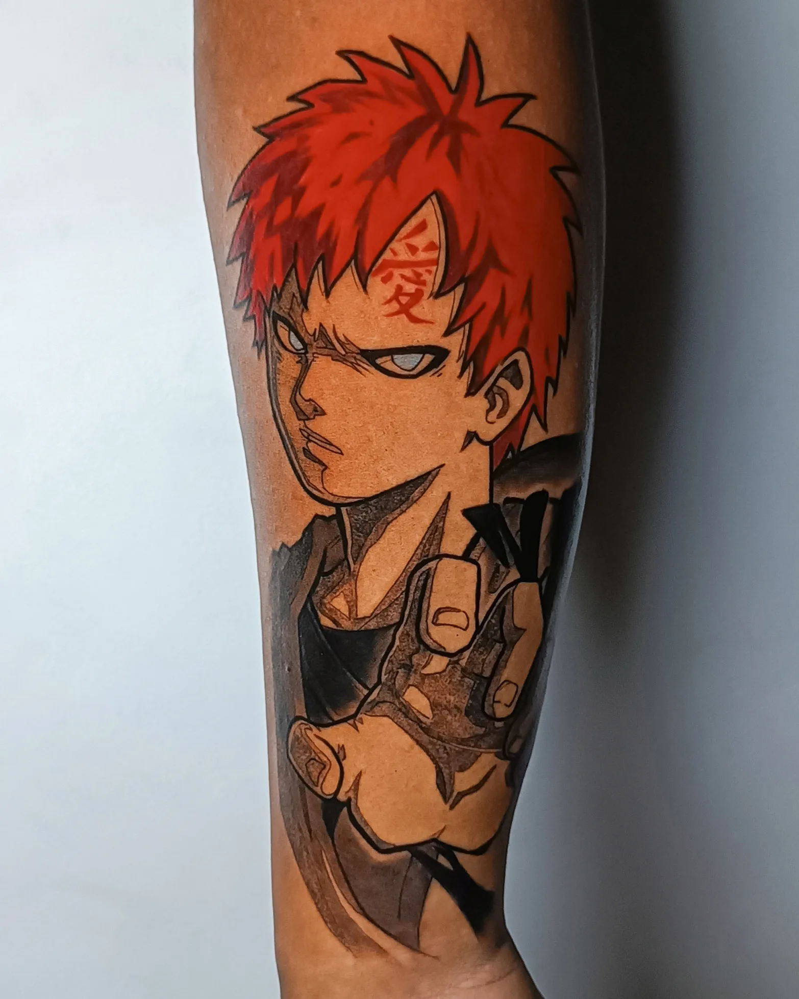
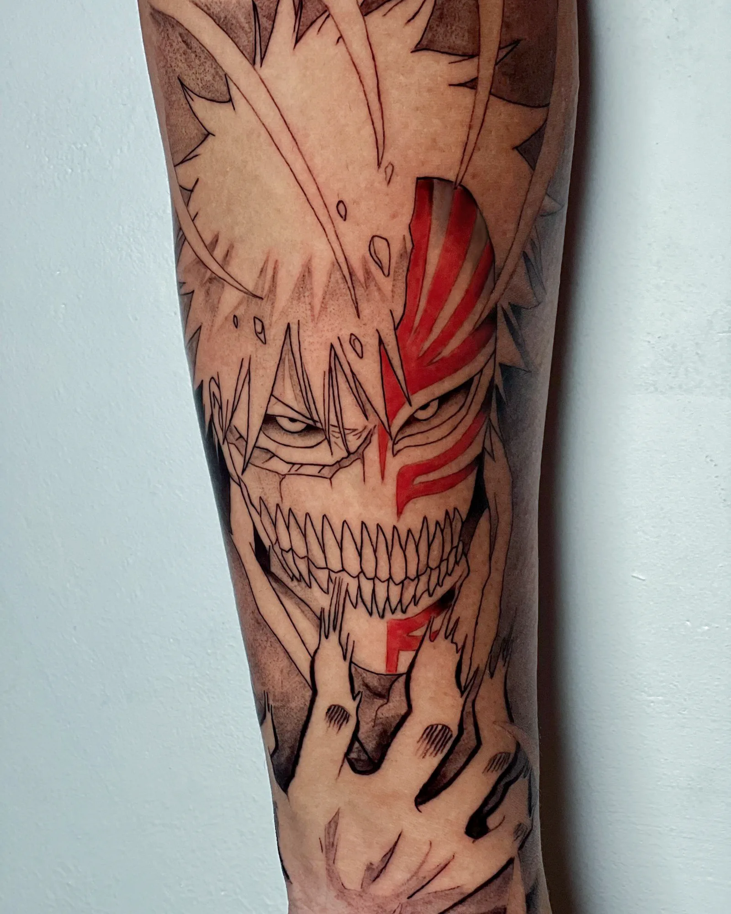
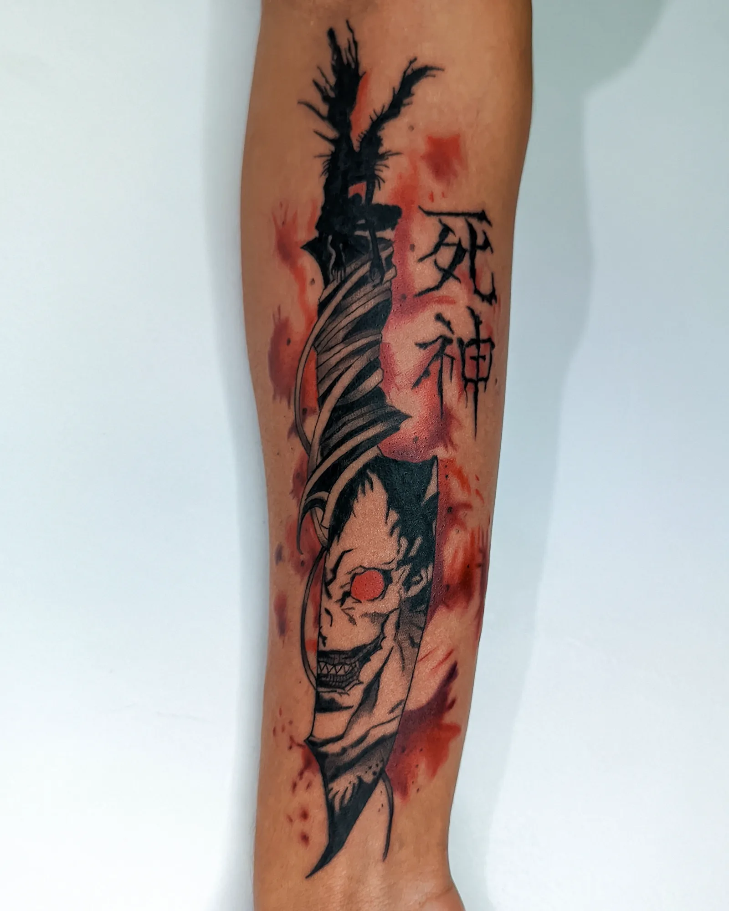
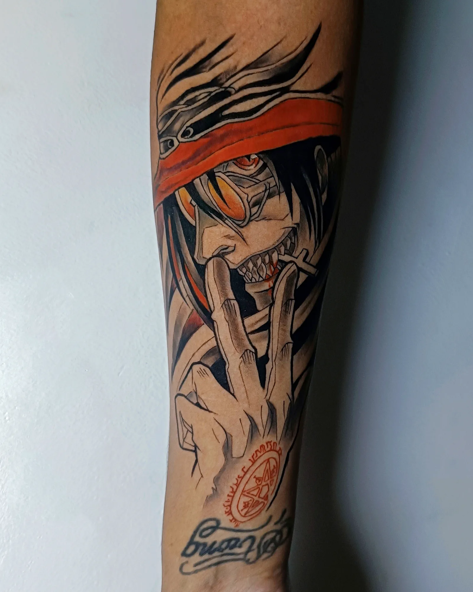
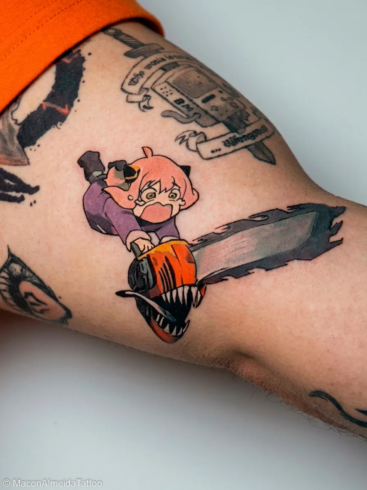

Casa Amarela · Recife, PE
Tatuagem de anime em Recife
Traz a referência que você já salvou. Eu refaço ela pro seu corpo — tamanho, lugar e traço.
Personagem de anime e mangá em preto e cinza ou colorido. Atendo um cliente por dia: o dia inteiro é seu, sem fila e sem pressa.

Trabalhos de anime
Cada uma dessas começou como uma referência que o cliente trouxe — e foi redesenhada pra caber no corpo dele.







Como funciona
Do print salvo no celular até a tattoo cicatrizada.
Você manda a referência
A imagem que você já salvou, o tamanho mais ou menos e em que parte do corpo. Com isso eu já passo o orçamento.
Eu refaço pro seu corpo
Ajusto proporção, posição e traço pra funcionar na sua pele — o que vai pra você não é a imagem impressa.
A data fica sua
Agenda confirmada com sinal. No dia, atendo só você — sem fila e sem pressa.
Cicatrização acompanhada
Você sai com as orientações e eu acompanho até sarar. O resultado tem que continuar bom depois.
Tem um personagem em mente?
Manda a referência que eu te digo o tamanho ideal, onde fica melhor e quanto fica.
Chamar no WhatsApp